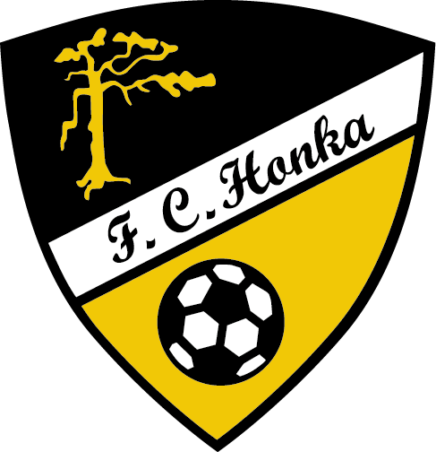
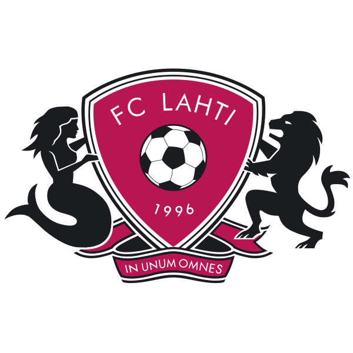
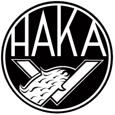
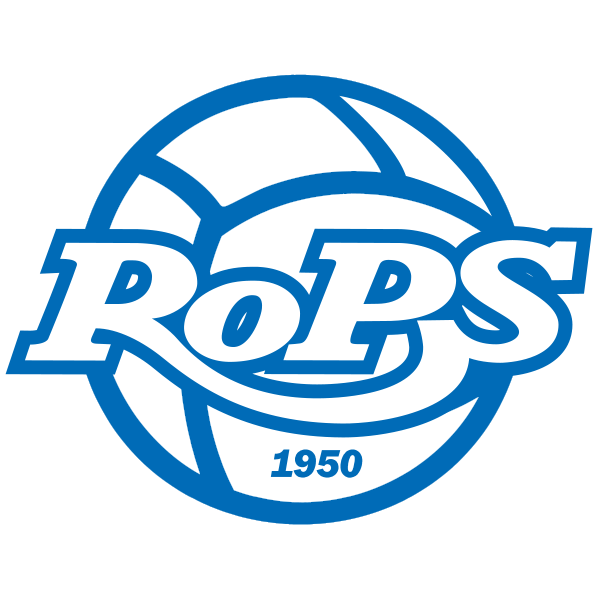
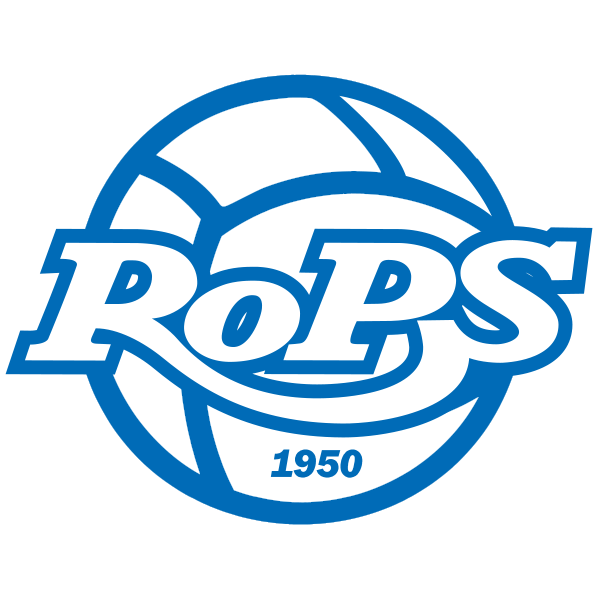
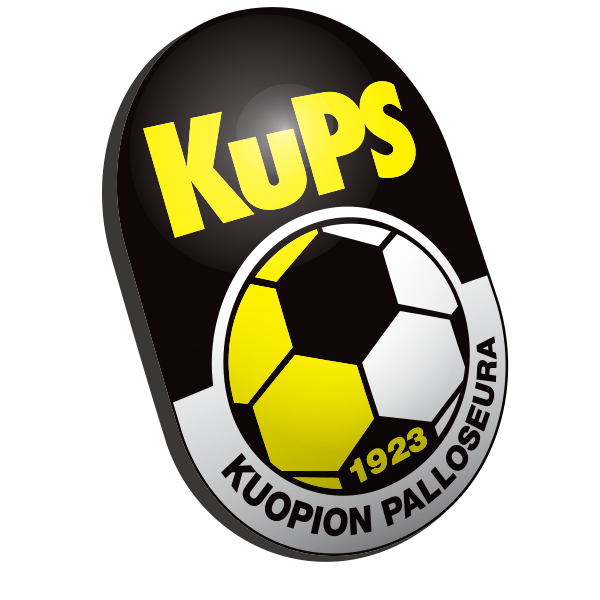

Veikkausliiga on Suomen jalkapallon Miesten pääsarja. Sarjassa on 12 joukkuetta ympäri Suomea. Veikkausliigan runkosarja pelataan tänäkin vuonna siten, että jokainen joukkue kohtaa toisensa kaksi kertaa. Tämän jälkeen pelataan ylä- ja ala loppusarja. Yläsarjaan pääsevät ne joukkueet, jotka ovat kuuden parhaan joukossa runkosarjan loputtua. Alasarjaan taas päätyvät ne joukkueet,jotka jäävät tämän ensimmäisen kuusikon ulkopuolelle. Veikkausliigan mestari pääsee mestarienliiga karsintoihin. Kakkonen pääsee myös suoraan Eurooppa liigan karsintoihin. Sitten yläsarjan 3,4,5 ja alasarjan voittaja pelaavat vielä karsinta turnauksen keskenään ja tämän karsinnan voittaja saa viimeisen europaikan. Eurooppa liigaan pääseminen on tärkeää joukkueilla siinä mielessä että se tuo jokaisesta pelistä paljon rahaa. Alasarjan viimeinen joukkue tippuu ykkösdivisioonaan ja toiseksi viimeinen karsii ykkösdivisioonan toista vastaa karsinta pelit, joita on kaksi kappaletta.



 


 

